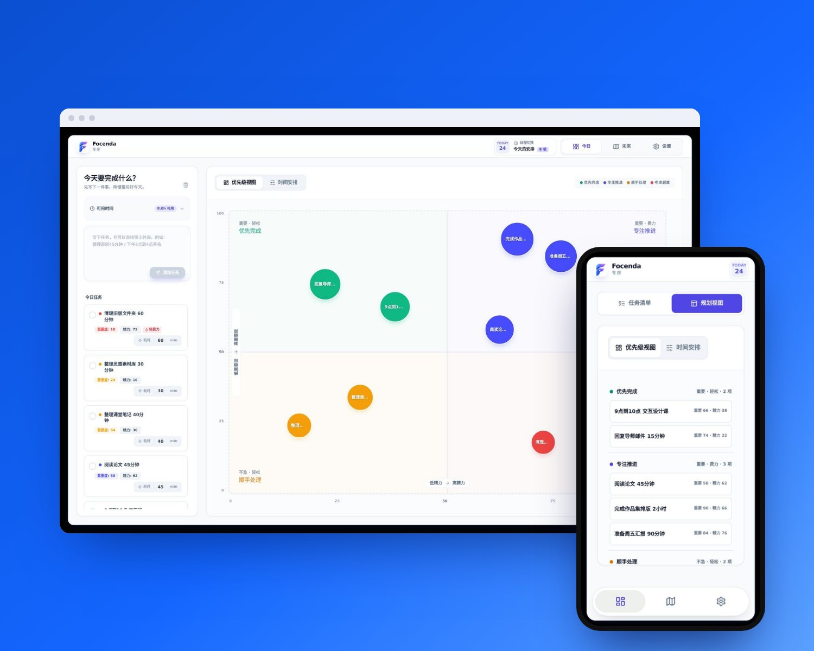
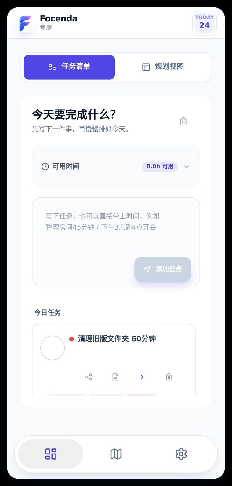
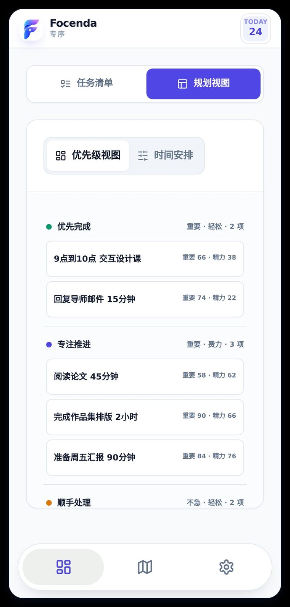

作品Focenda专序 · 每日规划与动态排期
把零散任务，
排成做得完的一天。
每日规划工具：一句话写下任务，它按重要度和精力帮你排好今天。

- 项目性质
- 课程项目 · 独立完成
- 我的角色
- 访谈研究、产品定义、交互视觉、原型开发
- 时间
- 2026.04 – 06
- 工具
- AI 编程工具 · Web + 手机响应式 · 本地规则
一分钟速览
- 14 个问题的设计师访谈，找到三类阻塞：琐事多、信息散、难出结果。
- 10 人 · 2 天内测：9/10 人用上了任务规划，定位因此收敛。
- 任务完成率 84%，80% 的人接受自动排期。
体验原型 （新标签页打开）本地原型 · 数据只存在你的浏览器
01问题
设计师的时间，
被“非设计”吃掉了。
我对初创公司设计师做了半结构化访谈：琐事多、信息没对齐、难拿出结果，是最常见的三类阻塞。
- 7.4类工作，平均同时负责
- 3.7次，每个页面平均修改
- 70%的返工源于需求模糊
- 83%只能自己上网找资料
02关键判断
跟着证据收窄：
先把“排好今天”做扎实。
研究起点是给设计师的协同工作空间；内测中 9/10 的人真正用到的是任务规划。于是定位改为面向大众的每日规划。
- 研究起点为设计师做 AI 协同工作空间
- 内测发现最被需要的是“排好今天”
- 现在的定位面向大众的每日规划与排期
03设计
重要度 × 精力分进四象限，
再按节奏排进今天。
一句话录入任务，本地规则给出两项评分并归入四象限；选专注、均衡或轻松，自动生成今天的时间轴。
优先级视图时间安排优先完成专注推进顺手处理考虑删减
重要 · 轻松优先完成重要 · 费力专注推进不急 · 轻松顺手处理不急 · 费力考虑删减
任务详情
准备周五汇报 90分钟
重要程度：84投入程度：76
- 时间
- 尚未指定时间
- 预计耗时
- 90 分钟
- 象限
- 专注推进
执行建议
这项任务重要且需要专注，建议留出完整时间，并先拆成 2–3 个小步骤。
安排建议今天已离线安排 8 项任务，预计需要 7 小时 40 分钟。
下班界限


—取舍
我删掉了什么
设计库调用不在“排好今天”的主路径上，留作概念周报复盘先验证规划与排期，个性化复盘放到后续大模型排期改用可读的本地规则，每条安排都说得出理由
04结果
10 人内测：
任务完成率 84%。
参与者为学生 5 人、职场办公 3 人、自由职业 2 人。样本小，属初步验证；“第一次不知道先看哪里”的反馈，让首屏只留下输入与今日任务。
- 90%使用了任务规划
- 84%任务完成率
- 80%接受自动排期
- 60%主动调整优先级
先把“排好今天”做扎实。
体验原型 （新标签页打开）本地原型 · 数据只存在你的浏览器